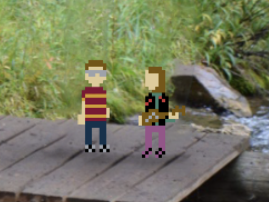
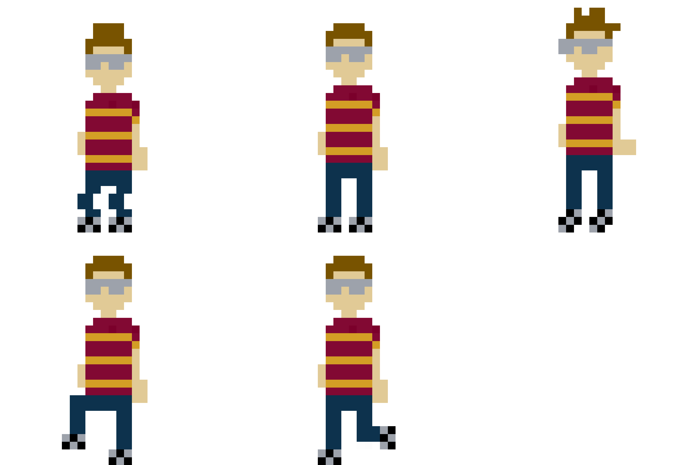

Scot Nielson
<<< back
C#/Unity Wedding Game
I married my amazing wife Emery in August of 2020 with a very small group due to the pandemic. We wanted to find a way to still include our friends and family who couldn't make it, so I built a short game in which up to two players could play as either me or my wife, navigating through a series of locations and memories that we shared while dating.
It was an excellent way to become more familiar with C#, the Unity game engine, Photoshop, game design, and it's a great memory to look back on and replay. Emery wrote the music herself too. You can try the game out at this link.